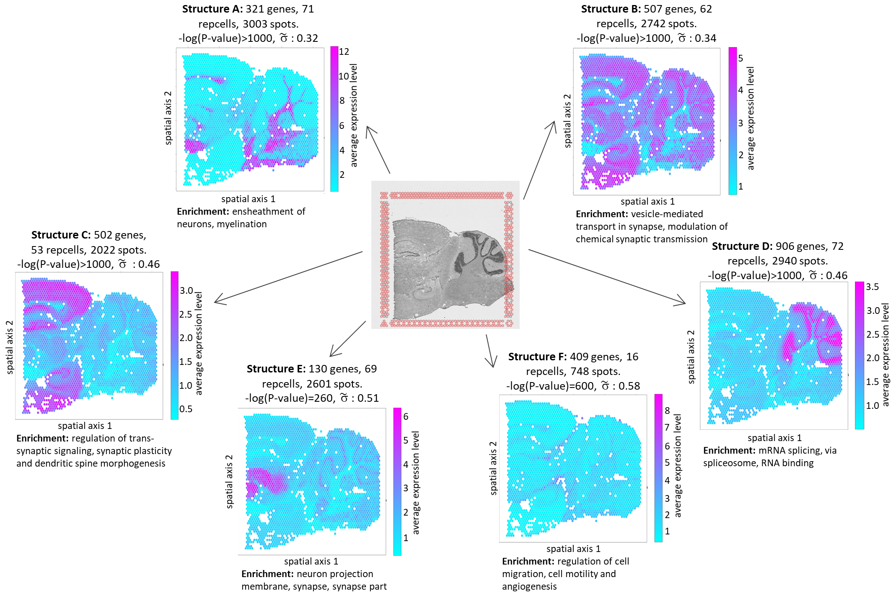

SPIRAL: Significant Process InfeRence ALgorithm for single cell RNA-sequencing and spatial transcriptomics
Gene expression data holds the potential to shed light on multiple biological processes at once. However, data analysis methods for single cell sequencing mostly focus on finding cell clusters or the principal progression line of the data. Data analysis for spatial transcriptomics mostly addresses clustering and finding spatially variable genes. Existing data analysis methods are effective in finding the main data features, but they might miss less pronounced, albeit significant, processes, possibly involving a subset of the samples.
In this work we present SPIRAL, an algorithm based on Gaussian statistics to detect all statistically significant biological processes in single cell, bulk and spatial transcriptomics data. The algorithm outputs a list of structures, each defined by a set of genes working simultaneously in a specific population of cells. SPIRAL is unique in its flexibility: the structures are constructed by selecting subsets of genes and cells based on statistically significant and consistent differential expression. Every gene and every cell may be part of one structure, more or none. SPIRAL also provides several visual representations of structures and pathway enrichment information. We validated the statistical soundness of SPIRAL on synthetic datasets and applied it to single cell, spatial and bulk RNA-sequencing datasets.

Inferring single-cell and spatial microRNA activity from transcriptomics data
The activity of miRNA varies across different cell populations and systems, as part of the mechanisms that distinguish cell types and roles in living organisms and in human health and disease.
Typically, miRNA regulation drives changes in the composition and levels of protein coding RNA and of lncRNA, with targets being down-regulated when miRNAs are active.
The term "miRNA activity" is used to refer to this transcriptional effect of miRNAs.
This study introduces miTEA-HiRes, a method designed to facilitate the evaluation of miRNA activity at high resolution.
The method applies to single cell transcriptomics, type-specific single cell populations, and spatial transcriptomics data.
By comparing different conditions, differential miRNA activity is inferred.
For instance, miTEA-HiRes analysis of PBMCs comparing MS patients to control groups revealed differential activity of miR-20a-5p and others, consistent with literature on miRNA underexpression in MS. We also show miR-519a-3p differential activity in specific cell populations.

Tempus ullamcorper
Aenean ornare velit lacus, ac varius enim lorem ullamcorper dolore. Proin aliquam facilisis ante interdum. Sed nulla amet lorem feugiat tempus aliquam.

Sed etiam facilis
Aenean ornare velit lacus, ac varius enim lorem ullamcorper dolore. Proin aliquam facilisis ante interdum. Sed nulla amet lorem feugiat tempus aliquam.

Feugiat lorem aenean
Aenean ornare velit lacus, ac varius enim lorem ullamcorper dolore. Proin aliquam facilisis ante interdum. Sed nulla amet lorem feugiat tempus aliquam.

Amet varius aliquam
Aenean ornare velit lacus, ac varius enim lorem ullamcorper dolore. Proin aliquam facilisis ante interdum. Sed nulla amet lorem feugiat tempus aliquam.